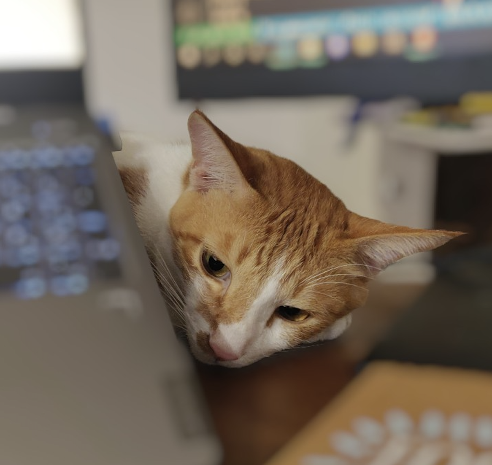

Hi, I'm Saumya. Nice to meet you.
I am a Masters student at Georgia Tech, specialising in Computing systems. I graduate in May 2024. At Georgia Tech, I work as a teaching assistant for the course - Introduction to Enterprise Computing. I also work with Prof. Calton Pu on the NORP Project- maintaining and adding features to the website for non profit data collection and analysis. (link)With close to 4 years of industry experience at companies like Schlumberger and skit.ai, I have a proven track record architecting critical infrastructure - delivering fast, stable and secure systems. Whether leading CI/CD and building real-time ETL ppipelines or contributing to high volume platforms like the "Outbound Campaign Manager" handling 4-5 million daily calls, I have worked on creating scalable and reliable platforms.
Beyond coding competence, I am a mentor - guiding new hires in best practices and active learning through knowledge sharing. With effective communication skills and the flexibility to thrive in both independent and collaborative initiatives, I hope to continue driving impact through engineering.
GDrive link to my ResumeApart from my technical interests, I am an avid reader and a cat lover. I love to travel and explore new places. My current favourite book is "Breaking the Mould: Reimagining India's Economic Future" by Raghuram Rajan and Rohit Lamba.
My favourite quote is by the great Albert Einstein - "If you can't explain it simply, you don't understand it well enough".
On the side is a picture of my cat, ever eager to find bugs with me, if only to eat them.